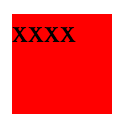
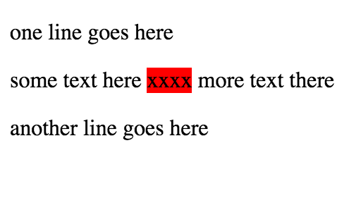
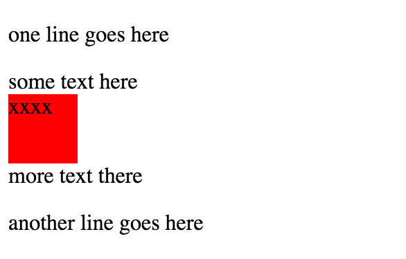
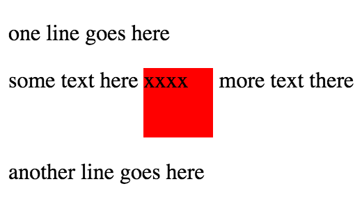

CSS Design
Inline, block, and inline-block
January 24, 2015
In order to be able to create a visually appealing web page, one must understand the tools used to move objects around the webpage. This post will look at different ways to display objects on a webpage using CSS (Cascading Style Sheets). CSS is a language used to format HTML (HyperText Markup Language), which is the language through which all websites are interpreted. Specifically, this post will examine the display method and its features, inline, block, and inline-block.
Let’s say we have an object with some text inside, like this:
span{
background:red;
height:50px;
width:50px;
}

Inline
Now, let's add some text around it and set the display as inline (the default display).
span{
background:red;
height:50px;
width:50px;
display: inline;
}

Notice how the text is now "inline", but also how the margins of the objects have been changed to fit within the surrounding text.
Block
Next, let's look at the block attribute.
span{
background:red;
height:50px;
width:50px;
display: block;
}

First, notice how the margins of the object have not been effected at all. Second, notice that the object was moved down below.
Inline-block
Great! Finally, let's look at inline-block.
span{
background:red;
height:50px;
width:50px;
display: inline-block;
}

Cool! You should notice that inline-block combines attributes of both inline and block. Like inline, the object remains within the text--it does not start a new line. Like block, however, it sustains the border of the object and does not start a new line.
Last Post Next Post